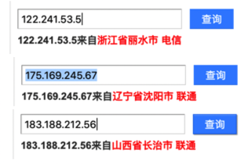

代理IP检测
另外，对于如何查看到自己当前的IP，可以用：
dobelcloud/PythonRequestsDemo.py at master · dobelgit/dobelcloud
提到的：
https://www.taobao.com/help/getip.php
得到：
ipCallback({ip:"222.92.130.218"})
或：
隧道代理接入文档 | 蜻蜓代理 - 企业级高质量代理ip平台
提到的：
https://proxy.horocn.com/api/ip
222.92.130.218
代码测试IP是否相同
在买了动态IP代理后，希望搞清楚是否生效，即每次获取的IP是否的确不同，可以自己写代码测试。
下面是我的测试代码，以阿布云的代理为例，供参考：
# test proxy IP
import requests
#目标网址
targetUrl = "http://httpbin.org/get"
# targetUrl = "http://test.abuyun.com"
# targetUrl = "https://www.taobao.com/help/getip.php"
# targetUrl = "http://proxy.abuyun.com/switch-ip"
# targetUrl = "http://proxy.abuyun.com/current-ip"
#http代理接入服务器地址端口
proxyHost = "http-dyn.abuyun.com"
proxyPort = "9020"
#账号密码
proxyUser = "password1"
proxyPass = "password2"
proxyMeta = "http://%(user)s:%(pass)s@%(host)s:%(port)s" % {
"host" : proxyHost,
"port" : proxyPort,
"user" : proxyUser,
"pass" : proxyPass,
}
proxies = {
"http" : proxyMeta,
"https" : proxyMeta,
}
result = requests.get(targetUrl, proxies=proxies)
# result = requests.get(targetUrl)
print("result=%s" % result)
print("result.status_code=%s" % result.status_code)
print("result.text=%s" % result.text)
效果是所希望的，正常的，每次IP都不同：
result=<Response [200]>
result.status_code=200
result.text={
"args": {},
"headers": {
"Accept": "*/*",
"Accept-Encoding": "gzip",
"Host": "httpbin.org",
"User-Agent": "python-requests/2.19.1"
},
"origin": "122.241.53.5, 122.241.53.5",
"url": "https://httpbin.org/get"
}
result=<Response [200]>
result.status_code=200
result.text={
"args": {},
"headers": {
"Accept": "*/*",
"Accept-Encoding": "gzip",
"Host": "httpbin.org",
"User-Agent": "python-requests/2.19.1"
},
"origin": "175.169.245.67, 175.169.245.67",
"url": "https://httpbin.org/get"
}
result=<Response [200]>
result.status_code=200
result.text={
"args": {},
"headers": {
"Accept": "*/*",
"Accept-Encoding": "gzip",
"Host": "httpbin.org",
"User-Agent": "python-requests/2.19.1"
},
"origin": "183.188.212.56, 183.188.212.56",
"url": "https://httpbin.org/get"
}
查查这几个IP都是哪里的：

看起来效果不错。